An admin portal that turns manual bank ops into a single, automated console.
Netbanking 2.0 is a new interoperable netbanking rail from NPCI Bharat BillPay (NBBL) — banks connect once instead of per-gateway, and customers pay straight from their bank app, UPI-style. This is the admin portal that operates that rail, replacing the manual, spreadsheet-driven back office it launched on.
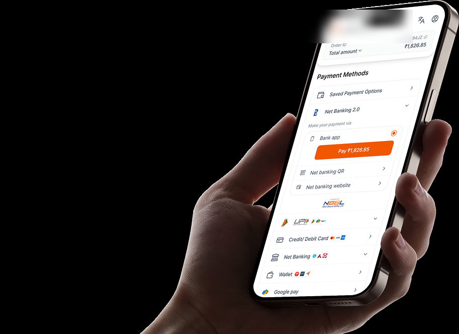
assets/hero/checkout-netbanking-2.pngOne console to operate the rail.
The portal is the operator-facing side of Netbanking 2.0 — used by bank ops and platform teams, not end customers. It brings the day-to-day jobs of running the rail into a single product: a performance dashboard, user management, bank-statement upload, and settlements.
Performance dashboard
Business and operational health at a glance — the home screen of the portal.
User management
Provision, role, and manage operator access without raising tickets.
Statement upload
Ingest bank statements through the portal instead of manual handoffs.
Settlements
Track and reconcile settlement, replacing spreadsheet reconciliation.
The rail was new — the operations were manual.
There was no existing portal. Running Netbanking 2.0 meant stitching together spreadsheets, manual file handoffs, and ticket-driven access — slow, error-prone, and impossible to scale as more banks came on.
- Reconciliation by spreadsheet — settlement figures tracked and matched by hand.
- Manual statement handling — bank statements moved and processed outside any system.
- Ticket-driven user access — onboarding and permissions handled ad hoc.
- No single view of performance — business and operational health scattered across sources.
What the portal had to do.
Kill the manual work
Replace spreadsheets and handoffs with flows inside one system.
Make performance legible
One dashboard for business and operational health.
Onboard banks repeatably
A consistent operator experience as the rail grows bank by bank.
Pick a feature to see how it was designed.
Each card opens a full breakdown — the screens, the design decisions, and how the manual work was replaced. Five features are written up; statement upload and settlements are next.
The Dashboard
The home of the portal — business and operational insight surfaced the moment an operator signs in. This unit covers the business view, how charts turn into actions, the graph-logic system underneath, and the performance view.
One scroll that answers "how is the business doing?"
The business dashboard opens on three headline numbers — revenue, payment count, total payment value — then walks the operator down through the supporting questions: the trend, the mix, the timing, the geography, and the device split. Every block is a self-contained insight card, so the page reads top-to-bottom as a single narrative.
assets/after/business-dashboard.pngThe insights it surfaces
Each card answers one operator question, in a deliberate order:
- How much? — Revenue, payment count, and total payment value as headline KPI tiles.
- Which way is it moving? — Payment-count trend over the selected range, all modes.
- What's it made of? — Share by merchant category (MCC), by top merchants (MID), and across the top 5 FIs.
- When does it happen? — A peak-time heatmap of hour × day, so load and opportunity windows are obvious.
- Where? — A region choropleth of India with a ranked table beside it.
- On what? — Device and mobile-OS share as donuts.
The graph vocabulary
Chart type isn't decorative — each is chosen to fit the shape of the question:
| Graph | What it's chosen for |
|---|---|
| KPI stat tile | A single headline number you read in one glance. |
| Line / area | A trend — is it rising or falling over time. |
| Multi-series line | Comparing a handful of series, e.g. the top 5 FIs. |
| Treemap | Part-to-whole across many categories (MCC share). |
| Vertical bars | A ranking — top merchants, top FIs. |
| Horizontal stacked bar | Composition of success across payment modes. |
| Donut | A 2–4 way split — device, OS, failure reasons. |
| Heatmap | Density across two axes — hour × day peak time. |
| Choropleth map | Geographic distribution across regions. |
| Uptime strip | Status over time for each connected system. |
The data reads itself — then tells you what to do.
A chart shows a pattern; it doesn't make a decision. So each heavy chart is paired with computed summary cards — top week, highest peak count, peak hour, lowest-activity window — and an Insights & Actionables panel that translates the pattern into a next step.
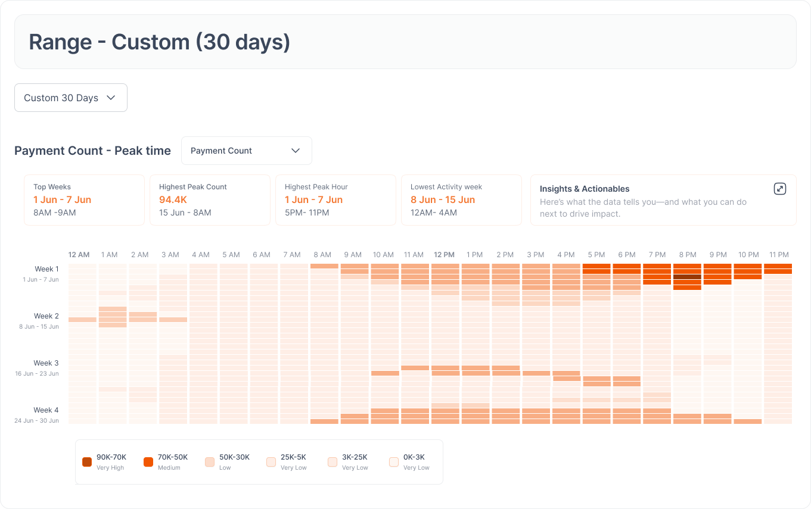
assets/after/peak-time-insights.pngA graph-logic system, not ten one-off charts.
Ten chart types across two dashboards could have become ten inconsistent builds. Instead the visuals run on a small set of rules baked into the design system (DLS), so any new insight slots in and renders correctly without redesigning it.

assets/after/graph-logic.pngRange-aware rendering.
The same metric picks its own chart by time granularity — hourly ranges become bars, multi-day ranges become a heatmap, long ranges become a line/area. Why it matters: the view always fits the data density, and no one has to choose a chart by hand.
One module pattern.
Every insight is the same card — title, metric selector, range control, aggregated/trend toggle, "view details", then the chart. Why it matters: new insights drop in without new layout, and operators learn the controls once.
One token-driven palette.
A single sequential orange ramp (plus a purple accent for latency/intraday) carried from the DLS encodes intensity across heatmaps, donuts, and bars. Why it matters: ten chart types stay visually coherent and on-brand.
A narrative layer.
Computed cards and the Insights & Actionables panel sit on top of the charts. Why it matters: the dashboard explains itself, so the value doesn't depend on the reader being an analyst.
Same system, pointed at reliability.
A second tab reuses the exact pattern for operational health — success rate and failure reasons, then system uptime and API latency — so "is the business growing?" and "is the rail healthy?" live in one product with one visual language.
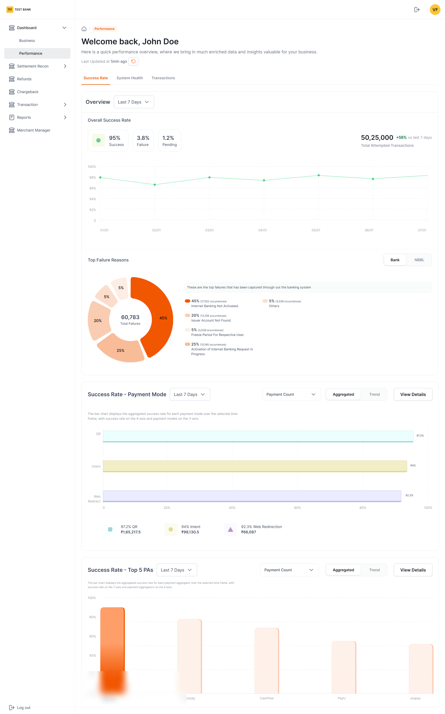
Success / failure / pending at the top, a failure-reason donut, then success by payment mode and top FIs.
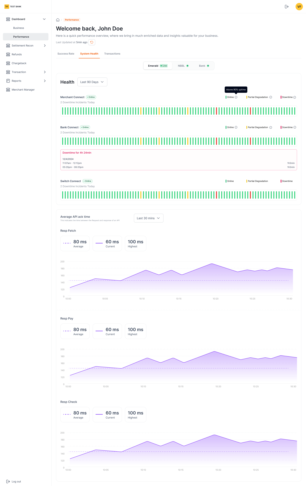
Uptime strips for each connected system and API ack-time area charts — average, current, highest.
User Access Management
Who can do what, in a regulated multi-bank rail. UAM replaces ticket-driven, ad-hoc access with an invite-based flow — role presets and a granular permission matrix — so admins provision their own teams in minutes and see exactly what each role can do.
Access that scales with the rail.
As banks and aggregators onboard, each brings its own team. UAM lets an admin invite users and set exactly what they can do — starting from a role preset, then tuning a granular permission matrix — all from the portal, no support ticket required.
Invite & lifecycle
Invite by email, track Active / Inactive / Invited / Link-expired, and resend in a click.
Role presets
Read-only, Operations lead, Refund manager — or Custom — pre-fill a sensible permission set.
Permission matrix
Category → permission checkboxes with plain-language descriptions and per-category counts.
Access by inbox doesn't scale.
Before UAM, access lived in tickets: slow to grant, hard to revoke, with no clear model for what a given person could actually do. In a payments rail onboarding bank after bank, that doesn't scale.
- Ticket-driven onboarding — every new user waited on a manual request.
- No clear role model — permissions granted ad hoc, hard to reason about or repeat.
- Slow to change — revoking or adjusting access meant another round-trip.
Every user, and where they are in onboarding.
The home of UAM is one searchable table split into Active and Pending. Status pills carry the lifecycle — Invited, Link expired, Active, Inactive — and row actions handle the obvious recovery, like resending an expired invite.
A two-step invite: who they are, then what they can do.
Adding a user is a short wizard. Step 1 captures details; Step 2 sets access. Splitting it keeps each screen focused — and the stepper makes the remaining work obvious.
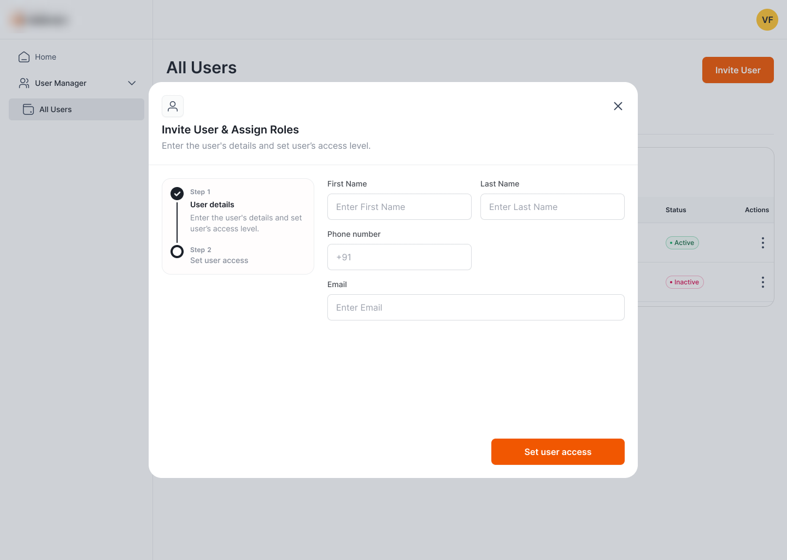
Presets for speed, a matrix for control.
Step 2 is where the design earns its keep. Rather than a wall of checkboxes, access is scoped by account type, started from a role preset, and refined in a master–detail permission matrix — so the fast path and the precise path are the same screen.
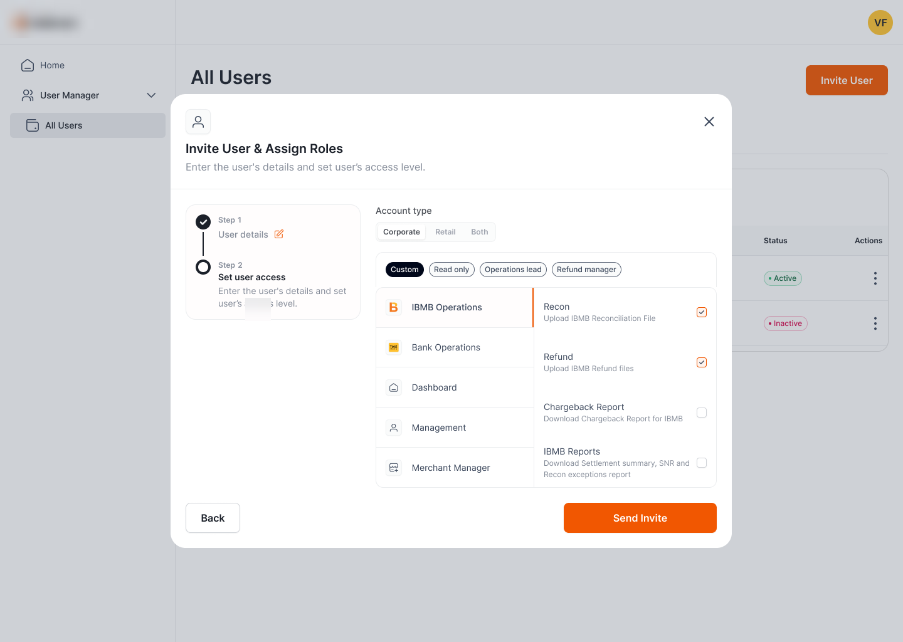
Categories on the left (IBMB Operations, Bank Operations, Dashboard…), individual permissions with descriptions on the right.
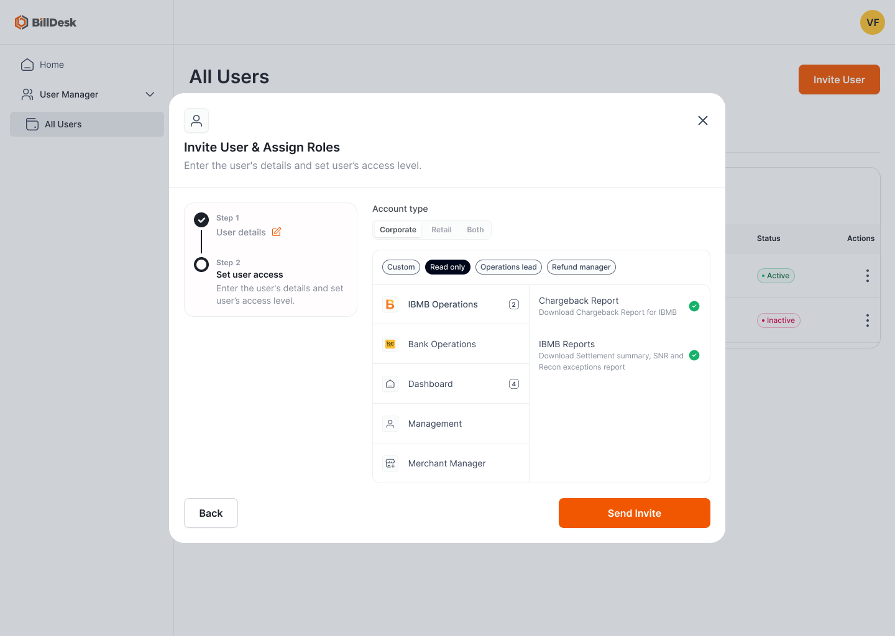
Picking a preset checks the right boxes and rolls up a count per category, with green ticks confirming what's granted.
Account-type scoping.
Access starts with Corporate / Retail / Both. Why it matters: it frames every downstream permission to the right product line before the admin touches a single toggle.
Presets, then tune.
Read only, Operations lead, Refund manager, or Custom set a baseline; the admin adjusts from there. Why it matters: the common roles take one click, while edge cases stay possible — without forcing everyone through raw checkboxes.
Master–detail matrix.
Permission categories on the left, individual toggles with plain-language descriptions on the right, and a count badge per category. Why it matters: dozens of permissions stay scannable, and the admin always sees how much a role grants at a glance.
Maker-Checker · Bank Refund Reports
Refunds move money, so no single person should push them through alone. This unit turns the maker-checker control into a screen: one team generates refund report batches, the bank downloads and verifies them, then acknowledges — a recorded, irreversible sign-off that replaces email-and-spreadsheet hand-offs with an auditable file lifecycle.
Two parties, one auditable file lifecycle.
Refund batches are generated as downloadable report files. Each file carries a File State that only ever moves forward — Ready for Download → Downloaded → Acknowledged — so anyone looking at the queue knows exactly how far a batch has travelled and who still owes an action.
Generate the batch
Refund reports are produced as files, ready for the bank to pull and process.
Download & acknowledge
The bank downloads, verifies against its own processing, then acknowledges receipt.
Recorded, irreversible
Acknowledgement is logged and can't be undone — a clean trail for a money-moving step.
Hand-offs over email don't prove anything.
Sharing refund files by email or shared drive leaves no reliable record of what was sent, what was received, or what the bank confirmed. For a step that moves money, "I think they got it" isn't good enough.
- No shared status — sender and bank tracked progress in separate threads.
- No proof of receipt — nothing recorded that the bank actually confirmed a batch.
- Easy to double-process — without a locked "acknowledged" state, the same file could be actioned twice.
One queue that carries state, not just files.
Bank Refund Reports lists each generated batch with its File State, the time it was generated, and a processing Status. The File State column is the heart of the control — it makes the maker-checker handshake visible in a single glance, and per-row download keeps the common case one click away.
Act on many at once — and only on what's valid.
Banks process refunds in batches, so the queue is built for bulk: select rows and a context toolbar appears with download and acknowledge. The File State filter narrows the list to exactly one stage, and the toolbar guards itself — already-acknowledged files are disabled so a step can't be repeated.
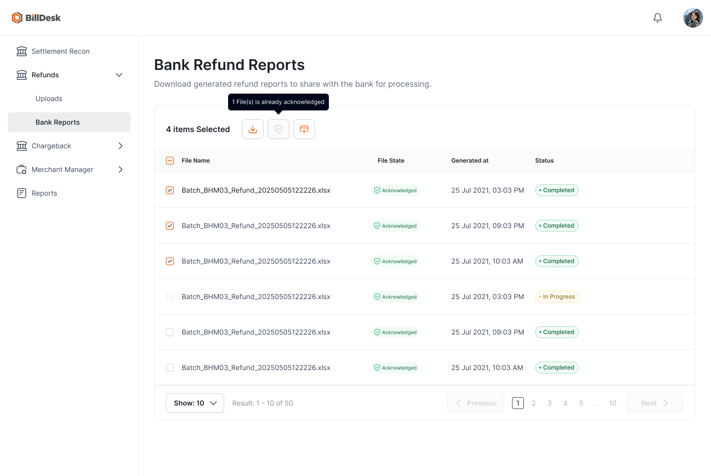
"4 items Selected" reveals a toolbar; the acknowledge icon is disabled with "1 File(s) is already acknowledged" so the action can't run twice.
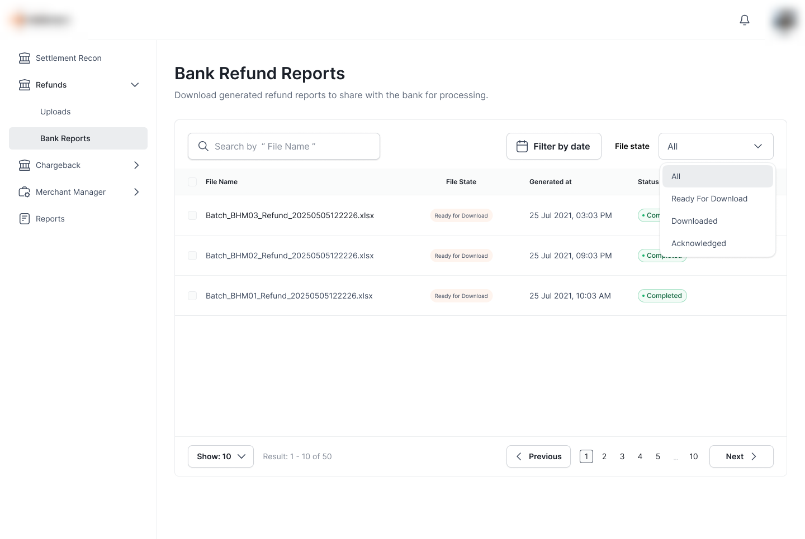
The filter mirrors the lifecycle exactly — Ready For Download, Downloaded, Acknowledged — so a checker can jump straight to "what still needs me."
The one action you can't take back gets a deliberate gate.
Acknowledgement is the checker's sign-off, so it's the one place the flow slows you down on purpose: a confirmation lists every file in the batch and states plainly that the action is recorded and irreversible — turning a routine click into a conscious decision.
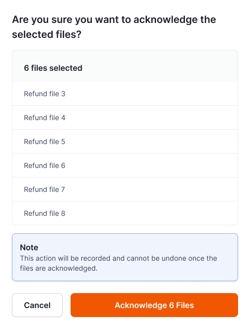
State that only moves forward.
Ready for Download → Downloaded → Acknowledged, never backward. Why it matters: a one-way lifecycle is the whole control — once a batch is acknowledged it's locked, so it can't be quietly re-sent or re-processed.
Guard before the gate.
Already-acknowledged files disable the action with an inline reason, before the modal ever opens. Why it matters: the system stops an invalid bulk action up front instead of failing partway through it.
Friction sized to consequence.
Download is one click; acknowledge gets a file list, an explicit irreversibility note, and a count-stamped confirm button. Why it matters: the heaviest, money-adjacent step is the one made hardest to do by accident.
Merchant Configuration
The rail's risk and compliance controls, in one place. Operators register merchants (MIDs) and merchant categories (MCCs), set amount and transaction limits per MID or MCC, and blacklist a merchant or category outright — so fraudulent or non-compliant traffic is stopped by configuration, not by chasing it after the fact.
One place to set the rules a transaction must pass.
Every payment on the rail is tied to a merchant (MID) and a merchant category (MCC). This unit is where operators define what those entities are allowed to do — the registry, the limits, and the blocks — so risk is governed by policy that's visible and editable, not buried in code or handled case by case.
Merchants & categories
Add and manage individual merchants (MIDs) and merchant categories (MCCs).
Amount & transaction caps
Set per-transaction amount limits and transaction-count limits, scoped to a MID or an MCC.
Blacklist
Block a merchant or an entire category when fraud or compliance demands it.
Risk controls that live outside the product don't scale.
Without a configuration surface, limits and blocks mean code changes or manual watchlists — slow to apply, hard to audit, and impossible for a compliance team to own. As more banks and merchants join the rail, that gap becomes the risk.
- No self-serve limits — amount and transaction caps required engineering, not configuration.
- Reactive blocking — bad merchants were stopped after the fact, not pre-empted by policy.
- Scope confusion — no clean way to apply a rule to a single MID vs a whole MCC.
One table, two entities — MCC and MID.
The home screen is a single configurable list with two tabs: Merchant Category Code and Merchant ID. Each row shows its code, name, whether it's blacklisted, and a transaction-limit status — so an operator reads an entity's entire compliance posture across one row, and starts any change from the Configure entry point.
Search, then decide: blacklist or limit.
Configuring is one modal that adapts to the entity. You search a category code or a MID, and once it resolves the same two levers appear — a Blacklist action and a Set Transaction Limit toggle. Even an entity not yet in the database is handled gracefully: a notice explains you can blacklist it or add it by continuing.
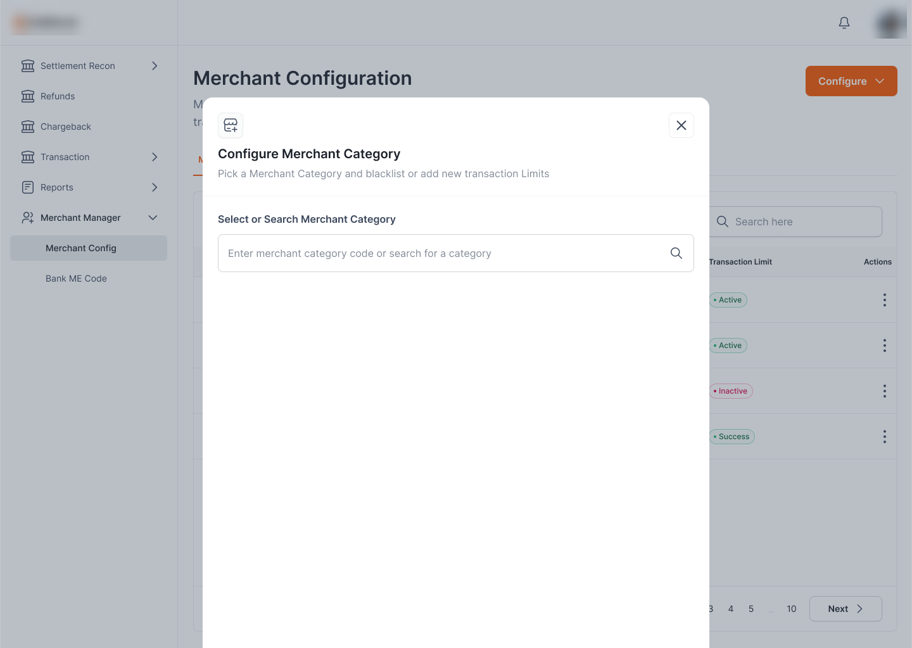
Step one is a single search — enter an MCC code (or a MID on the other tab) to pull up the entity to configure.
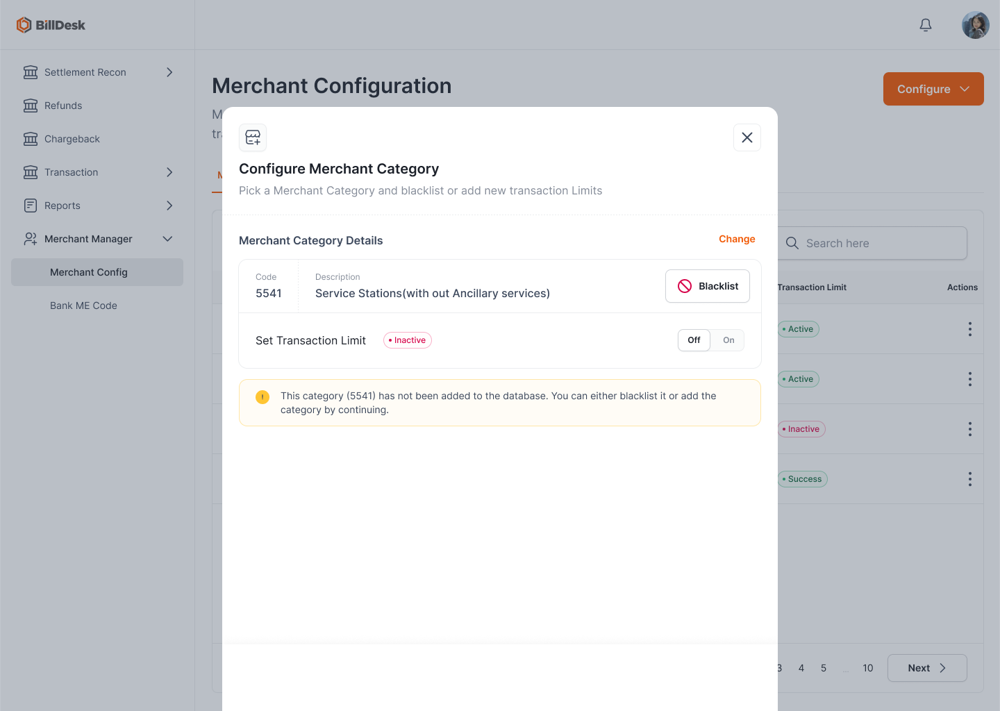
The resolved card surfaces code + description, a Blacklist button, and a Set-Transaction-Limit Off/On toggle — plus a notice when the entity isn't in the database yet.
The Merchant ID path is the same pattern at a different scope — a MID instead of a category, with an explicit Add to commit a new merchant.
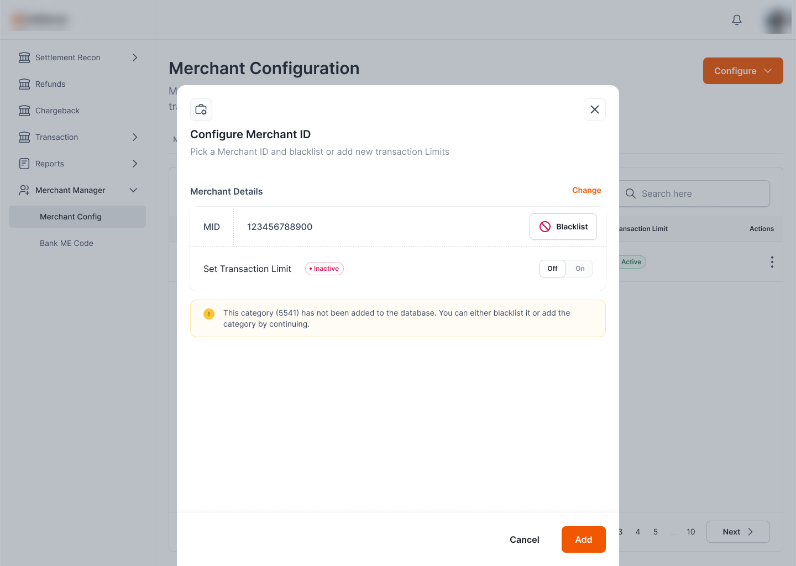
Three kinds of limit, one consistent editor.
Flipping Set Transaction Limit on opens the limit builder. The same panel adds a per-transaction Amount limit (min–max in ₹), a Count limit, and a time-boxed Custom limit — so a routine cap and a temporary, date-bound rule live in one place instead of three different screens.
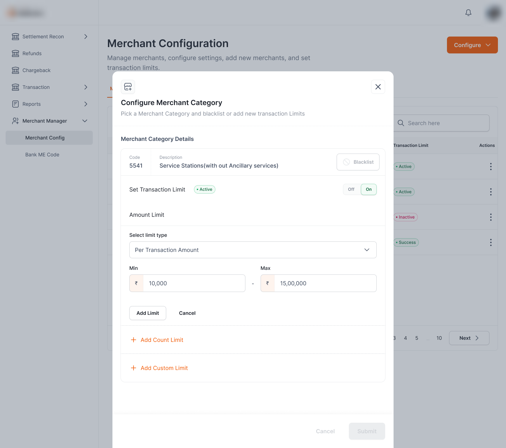
Select a limit type (Per Transaction Amount), set Min–Max in ₹, then Add Limit — with shortcuts to also add a Count or Custom limit.
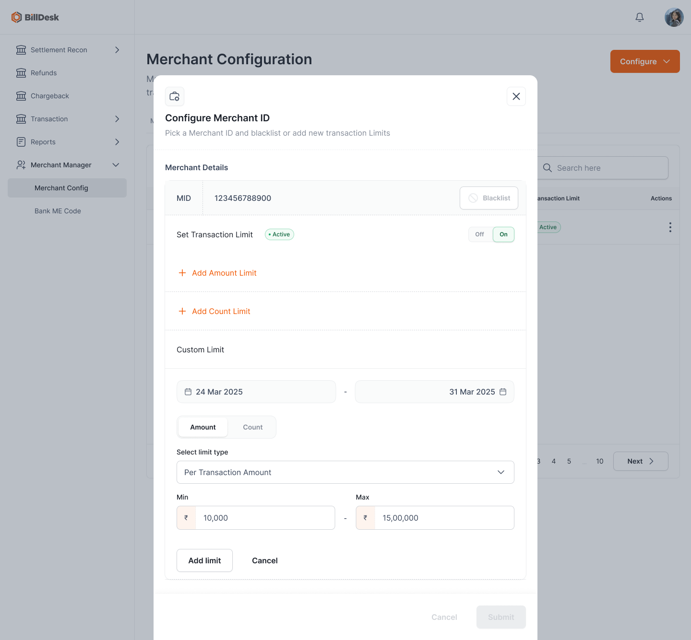
A Custom limit adds a date range (e.g. 24–31 Mar 2025) and an Amount / Count toggle — for temporary caps around a campaign or a risk window.
One pattern, two scopes.
MCC and MID are configured through the same modal — search, blacklist, set limits. Why it matters: an operator learns the flow once and applies it at either a category-wide or a single-merchant scope.
Amount, count, and time-boxed in one builder.
Per-transaction amount, transaction count, and a date-ranged custom limit stack in the same panel. Why it matters: standing caps and temporary risk windows are expressed without leaving the screen or learning a second tool.
Unknown entities handled, not blocked.
A category or MID that isn't in the database yet shows a notice — blacklist it, or add it by continuing. Why it matters: compliance can act on a bad actor immediately, even before it's formally onboarded.
Blocking looks like blocking.
Blacklisting is the hardest action here, so the design makes it unmistakable: the entity is banded in red, the primary button reads Continue & Blacklist, and a Remove Blacklist escape sits right beside it — destructive intent is loud, and reversible.
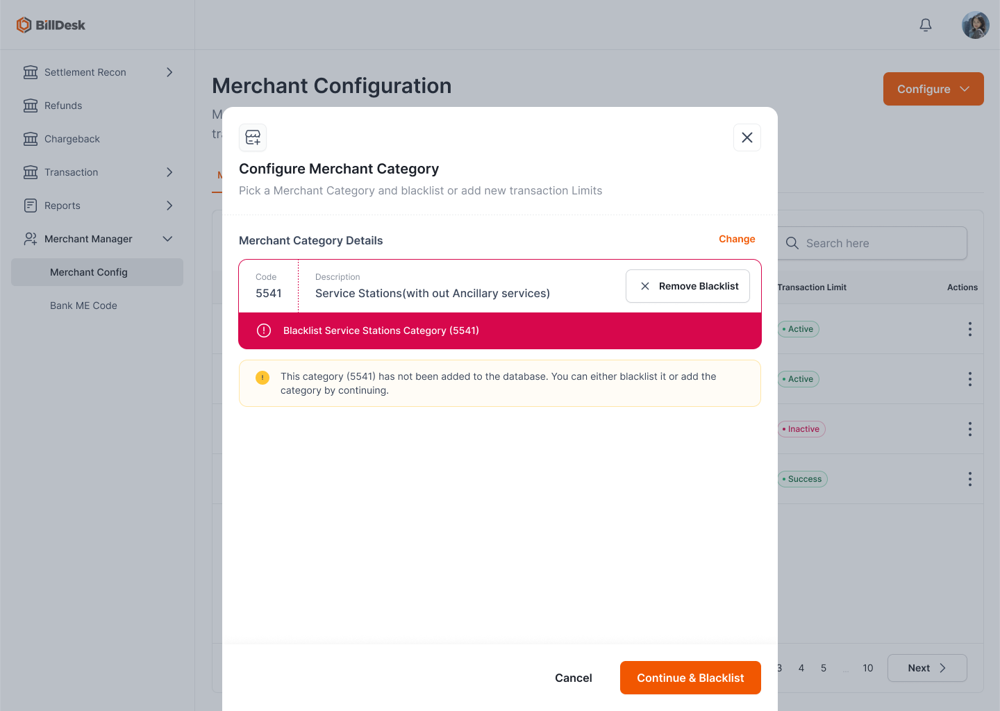
Whitelabel · One portal, every bank's brand
The rail is interoperable, but each bank wants its operators working inside its brand — not a generic console. Whitelabel re-skins the entire portal to a bank's colours, logo, and theme from a single token layer, so the same product ships as the public-sector bank's portal and the global bank's portal without forking the UI.
Same product, the bank's identity.
A bank's operators should feel they're in their own system. Whitelabel themes the portal end-to-end — brand colour, logo, and supporting palette — driven by a per-bank token set, so onboarding a new bank is a theme, not a rebuild.
Colour & full theme
Not just an accent swap — the public-sector bank ships as a light, green system; the global bank as a dark, red one, from the same screens.
Logo & illustrations
The bank's mark, naming, and even the spot illustrations re-tint to the brand palette.
One token layer
A new bank is a token set, not a fork — the same UI re-themes instead of duplicating.
A generic console doesn't feel like the bank's.
A shared rail with one fixed look makes every bank's operators work in someone else's product. Hard-coding each bank's brand instead would mean forking the UI per bank — a maintenance trap as the rail grows.
- No brand ownership — banks want their operators inside their own identity, not a vendor's.
- Forking doesn't scale — a hand-built skin per bank multiplies the code to maintain.
- Drift across banks — without one theming layer, each bank's portal slowly diverges.
The same dashboard, in two identities.
This is the proof: the same performance dashboard, rendered for two banks. the public-sector bank is a light theme built on its green, with an orange accent; the global bank is a dark theme built on its red, with a teal accent. The layout, components, and data are identical — only the token layer changes.
the public-sector bank's green sidebar and brand chrome; the QR funnel and failure-reason charts pick up the green ramp.
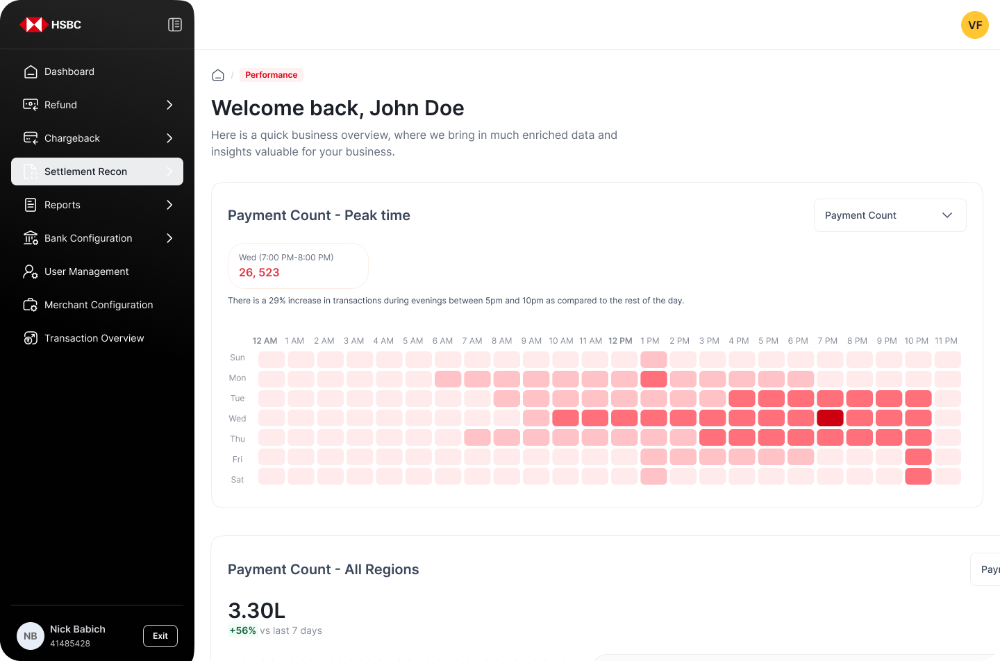
the global bank's dark sidebar and red mark; the same peak-time heatmap re-ramps to red without touching the layout.
It's the bank's product from sign-in.
The brand lands before login. Each bank gets its own split-screen entry — the public-sector bank's green hero and orange call-to-action, the global bank's black brand panel and red confirm — so an operator never sees a generic vendor screen on the way in.
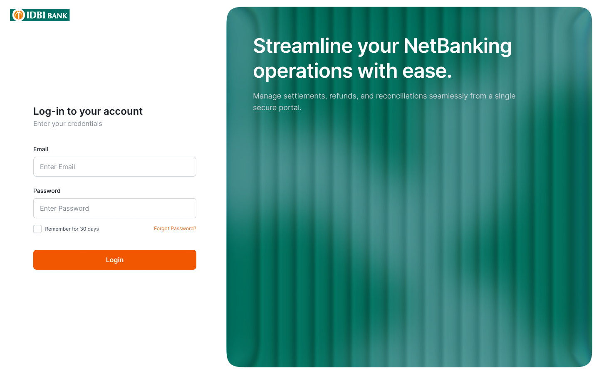
Green brand hero — "Streamline your NetBanking operations" — with the public-sector bank's logo and an orange Login.
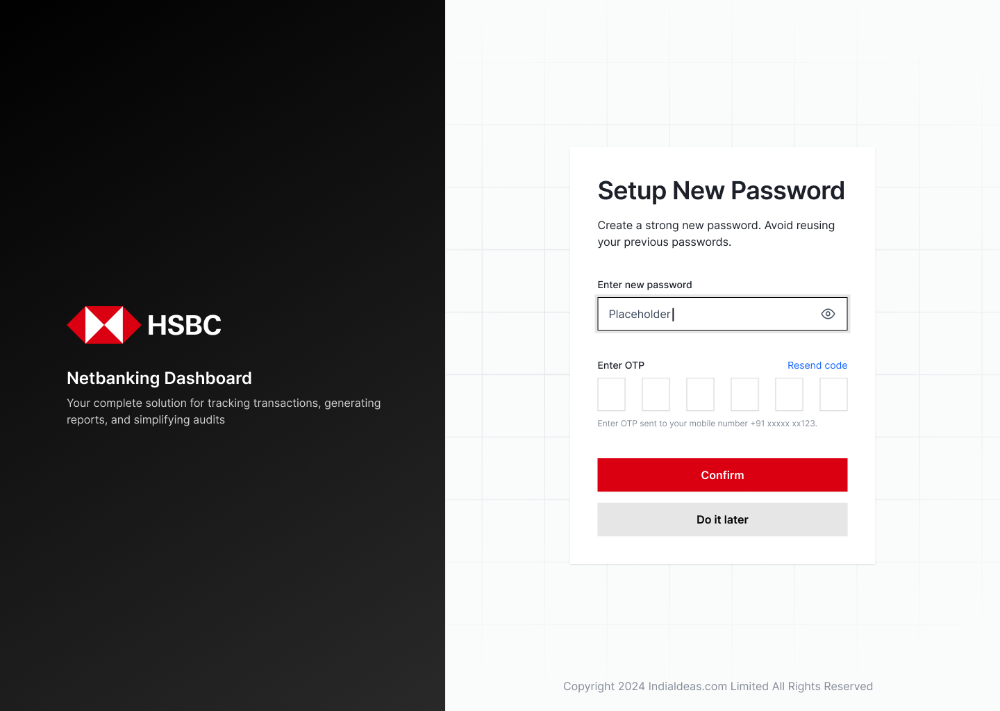
Black brand panel with the the global bank mark and "Netbanking Dashboard", and a red Confirm on the set-password step.
The theme reaches every flow, not just the chrome.
Whitelabeling that stops at the header is obvious to users. Here it runs all the way down — into modals, tables, status states, and even the spot illustrations — in both banks' themes.
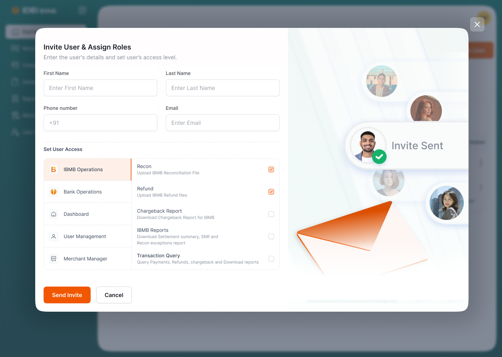
The UAM invite modal, themed for the public-sector bank — permission checkboxes and the "Invite Sent" illustration both adopt the brand palette.
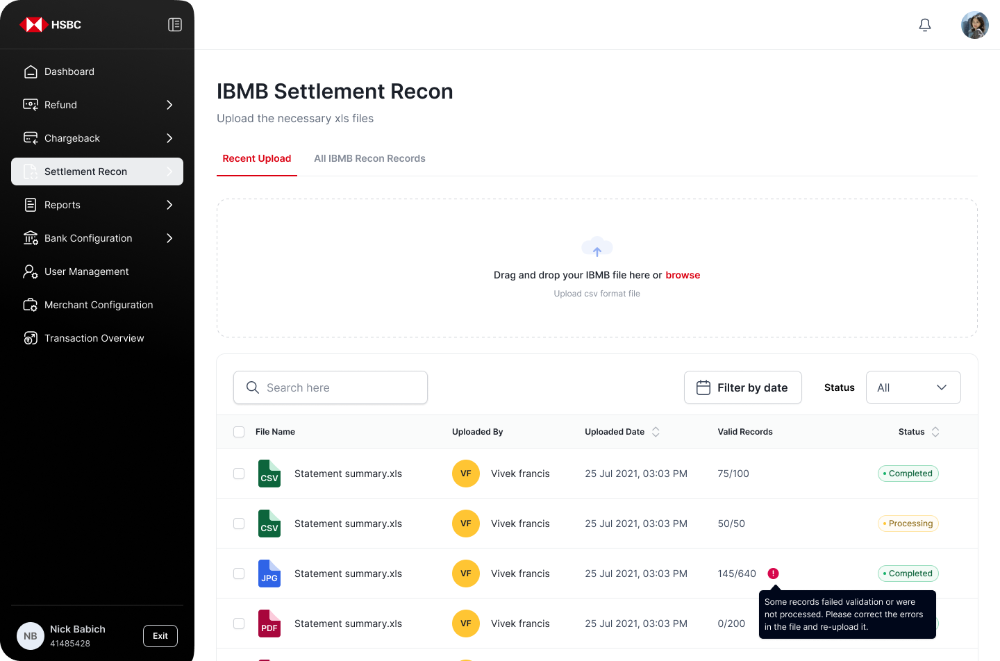
A full working screen — Settlement Recon upload with status pills and validation errors — in the global bank's dark theme.
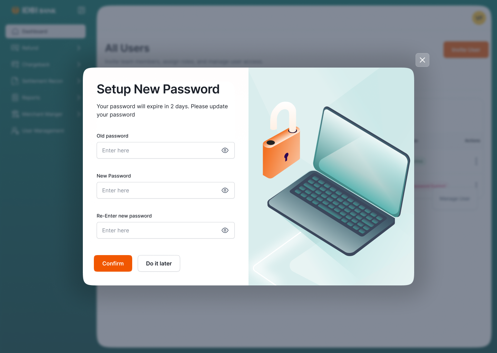
Password setup — the lock illustration and Confirm button follow the the public-sector bank palette.
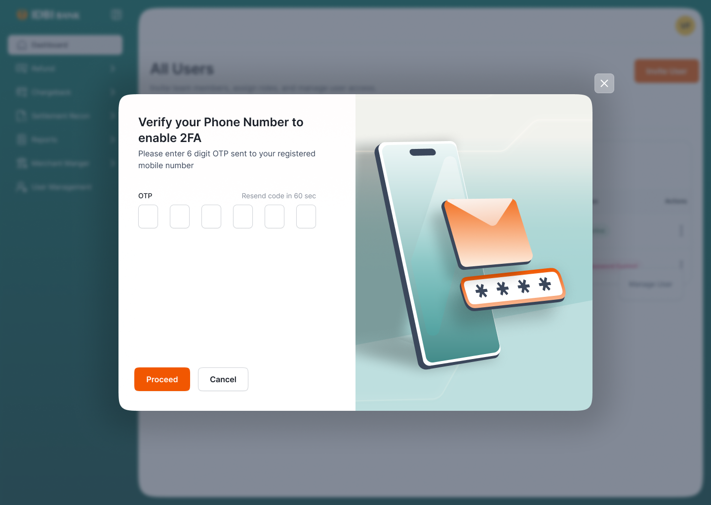
Phone-number 2FA — OTP inputs and the phone illustration, re-tinted to match.
A token set per bank, applied once.
Each bank is defined as a small set of tokens — a primary, a secondary, and an accent — plus its logo and theme mode. The the global bank moodboard captures that thinking: "illuminating the dark" with a bold red primary, black secondary, and a teal accent that everything else derives from.
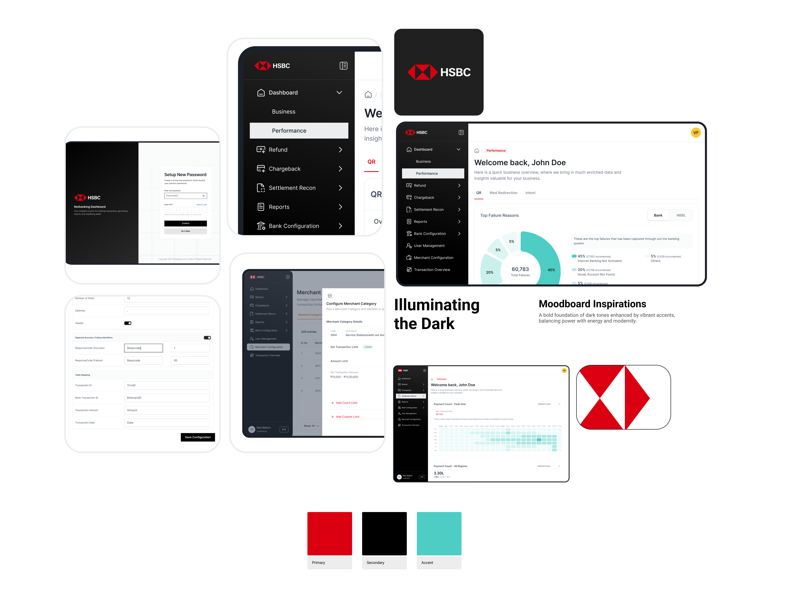
Tokens, not forks.
A bank is a primary + secondary + accent + logo + theme mode — read by the same components. Why it matters: onboarding a bank is a config file, so the codebase stays single and every bank inherits fixes and new features for free.
Theme mode, not just hue.
the public-sector bank runs light on green; the global bank runs dark on red — the same screens in opposite modes. Why it matters: whitelabel covers a bank's full identity, not a one-colour reskin, so each portal feels genuinely its own.
Everything derives from the token.
Charts, status pills, illustrations, and controls all ramp from the brand colour rather than carrying their own. Why it matters: a heatmap or a funnel stays legible and on-brand in either theme without per-chart overrides.
Live, and carrying real banks.
- 2 banks live in production — operating on the portal today.
- Manual work automated — reconciliation, statement handling, and access moved into the system.
Deeper insight as the base grows.
The UI and analytics can go further. With more banks live and a larger user base, the dashboard can earn richer insights and the flows can be refined against real usage.